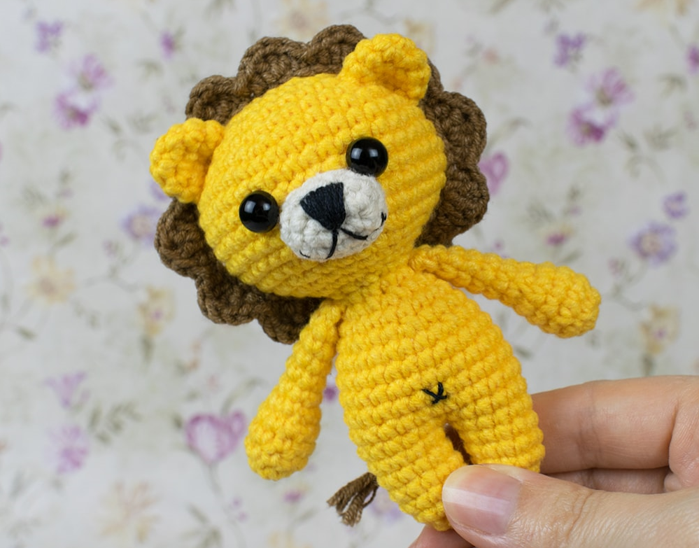

Tiny Lion Amigurumi Pattern
Are you looking for a small cute amigurumi lion? If you are, then you are really going to love this little king of the jungle!
Crochet it today with our step-by-step Tiny Lion Amigurumi Pattern!
Materials:
- 4 ply yarn
- 2.00 mm crochet hook
- 8 mm safety eyes
- Fiberfill
- Black embroidery floss
- Sewing needle and scissors
Abbreviations:
ch = chain
st = stitch
sc = single crochet
inc = increase (2 sc in 1 st)
dec = decrease (2 sc together)
sl st = slip stitch
dc = double crochet
tr = treble crochet
(..) = repeat the instructions in brackets based on the given no. of times
[..] = total number of stitches
Head:
Crochet with yellow yarn.
Rnd 1: sc x6 in magic ring [6]
Rnd 2: (inc) x6 [12]
Rnd 3: (sc, inc) x6 [18]
Rnd 4: (sc x2, inc) x6 [24]
Rnd 5: (sc x3, inc) x6 [30]
Rnd 6: (sc x4, inc) x6 [36]
Rnd 7: (sc x5, inc) x6 [42]
Rnd 8-13: sc x42 [42]
Rnd 14: (sc x5, dec) x6 [36]
Rnd 15: (sc x5, dec) x6 [36]
Rnd 16: (sc x3, dec) x6 [24]
Rnd 17: (sc x2, dec) x6 [18]
Rnd 18: (sc, dec) x6 [12]
Add more stuffing. The head is done. Continue working on the body.
Body:
Stuff as you go.
Rnd 19: sc x12 [12]
Rnd 20: (sc, inc) x6 [18]
Rnd 21: sc x18 [18
Rnd 22: (sc x2, inc) x6 [24]
Rnd 23: sc x24 [24]
Rnd 24: (sc x11, inc) x2 [26]
Rnd 25-29: sc x26 [26]
Now, you are going to crochet legs . Divide the body into 2 equal parts with a stitch maker (each part has 13 st).
Legs:
Rnd 1: Crochet the first round of the leg: make sc in each st until the marker then turn and crochet on the other side of the body, forming a circle. [13]
Rnd 2-5: sc x13 [13]
Stuff.
Fasten off leaving a small tail. Weave in the yarn in front loops of the rest 7 stitches, then pull to close the end.
Join yellow yarn between the legs and crochet the second leg on the rest 13 st of the body in the same way.
Arms (make 2):
Work with yellow yarn.
Rnd 1: sc x5 in magic ring [5]
Rnd 2: inc x5 [10]
Rnd 3-5: sc x10 [10]
Stuff the bottom of the arms with fiberfill.
Rnd 6: (sc, dec) x3, sc [7]
Flatten the edges and crochet 3 sc through the stitches of both layers, closing the hole. Fasten off leaving a tail for sewing.
Muzzle:
Make 5 ch with beige yarn. Continue working around the foundation chain, beginning from the 2nd st from hook.
Rnd 1: inc, sc x2, sc x4, turn, sc x2, inc [12]
Rnd 2: sc, inc, sc x2, inc, sc x2, inc, sc x2, inc, sc [16]
Rnd 3: sc x16 [16]
Finish with sl st. Fasten off leaving a tail for sewing.
Ears (make 2):
Work with yellow yarn.
Rnd 1: sc x5 in magic ring [5]
Rnd 2: inc x5 [10]
Rnd 3: (inc, sc x4) x2 [12]
Rnd 4: sc x12 [12]
Finish with sl st. Fasten off leaving a tail for sewing.
Mane:
Crochet 50 ch with brown yarn. Turn and continue working from the 2nd stitch from hook.
Rnd 1: sc, (hdc {dc,tr,dc}- all three in next st, hdc, sl st) repeat the instructions in the brackets x12
Tail:
Make a small tassel using brown yarn. Join the yarn to this tassel and crochet 6 ch. Fasten off leaving a tail for sewing.
Assembly:
- Put some fiberfill inside the muzzle and pin it right under the eyes. Sew it to the head.
- Embroider a nose and a mouth.
- Make the ears slightly round-shaped. Sew on the ears at the level of Rnds 5-7 of the head.
- Pin the mane around the head behind the ears. Sew it on.
- Sew on the arms at Rnd 19 of the body.
- Sew on the tail.
- Embroider a navel.
Great job! Your tiny lion amigurumi is done! Share your finished work and tag us in Instagram!